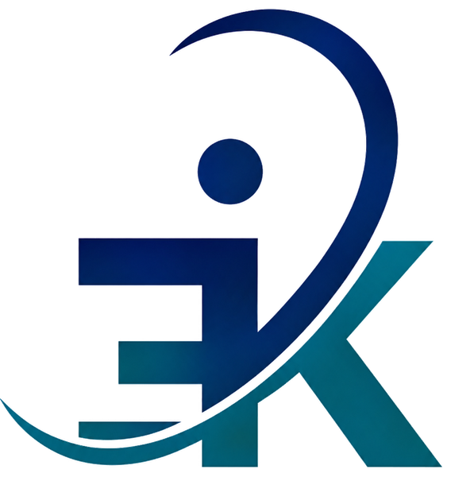
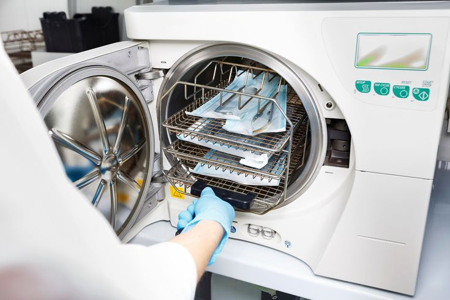
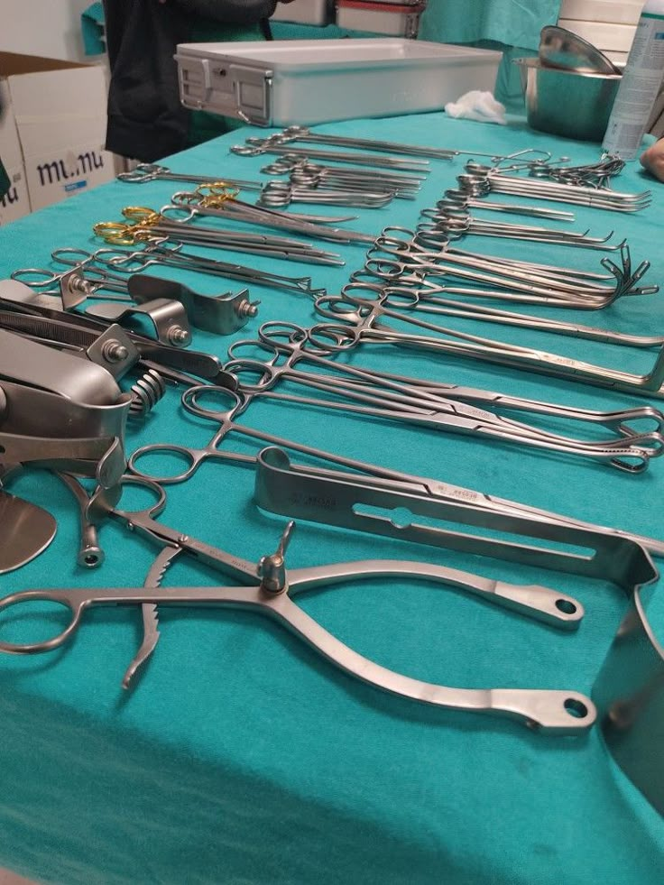
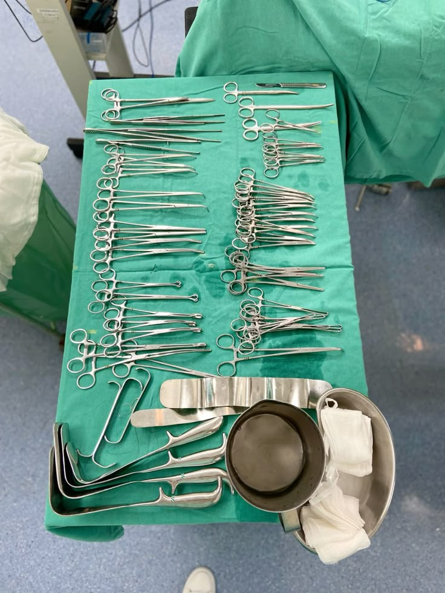
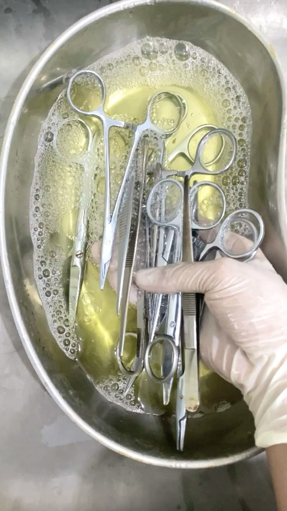
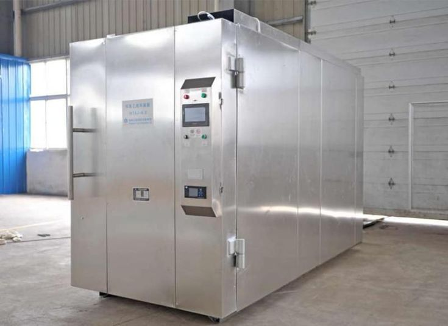
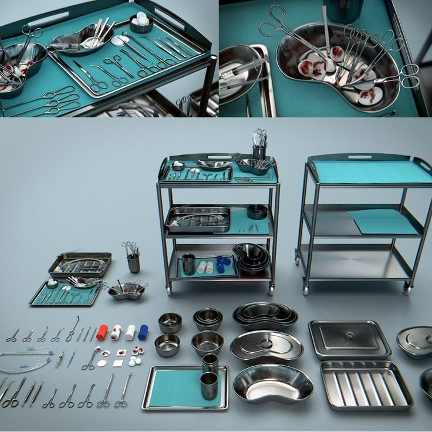

Surgical instruments
Carefully handled for the demands of clinical practice.

KIAAN ETOCENTRE STERILIZATION Talk to our teamETO STERILIZATION · AHMEDABAD, INDIA
Dependable ethylene oxide sterilization for the instruments your care teams rely on, handled with attention, traceability and timely service.

TRUST, MEASURED
Capacity and service standards that support busy healthcare teams.
01 / WHAT WE HANDLE
ETO processing for heat- and moisture-sensitive medical devices, with pickup and delivery support designed around your schedule.

Carefully handled for the demands of clinical practice.
Specialized processing for compatible implant devices.
ETO sterilization for suitable heat-sensitive equipment.
Reliable support for dental clinics and practices.
Processing support for compatible medical supplies.
Round-the-clock coordination for your facility.
02 / OUR APPROACH
CLEAN TODAY.
SAFER TOMORROW.
From pickup to processing and return, KIAAN ETO Centre supports healthcare providers with thoughtful service and a quality-focused sterilization workflow. Our team is here around the clock to coordinate collection and delivery.
Start a conversation ↗
KIAAN / FIELD NOTES 0103 / A CLEAR PROCESS
Reach out to arrange service. Our team will confirm instrument suitability, timing and collection details with your facility.
Tell us what your hospital or clinic needs and when.
Arrange convenient pickup with our 24/7 support team.
Compatible instruments are handled for ETO sterilization.
Coordinate delivery back to your facility.
04 / INSIDE KIAAN
A closer look at the equipment and instruments behind our service.



05 / GET IN TOUCH
Contact our team to discuss ETO sterilization, schedule pickup or ask a service question. Your message will open in WhatsApp for you to review and send.
06 / FIND US
416, 4th Floor, Atria Business Zone,
Jinning Press, Amdupura, D Colony,
near Hotel Shri Krishna Palace, Aditya Nagar,
Ahmedabad, Gujarat 382345